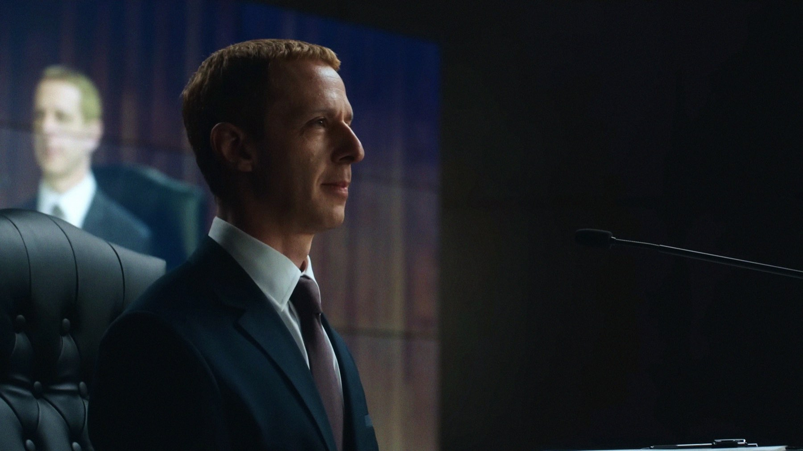
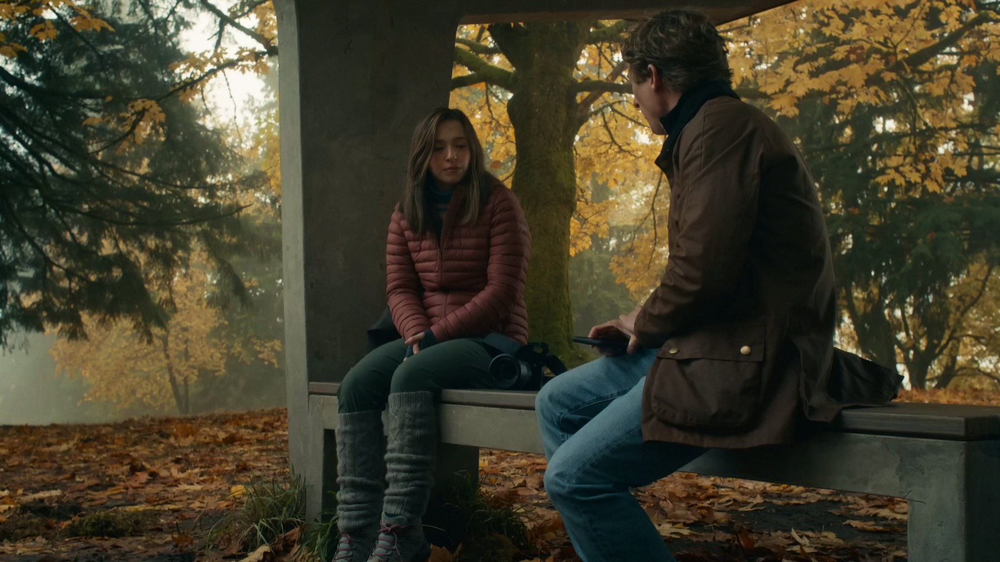

The Social Reckoning, recensione: Sorkin sotto accusa
Il ritorno di Aaron Sorkin a Facebook, questa volta anche dietro la macchina da presa, divide la critica: ecco cosa dicono le recensioni e per chi vale il biglietto
Quando un film arriva dopo uno dei grandi successi della sceneggiatura recente, il confronto è un fatto, non una scelta. The Social Reckoning ci arriva con una scommessa in più: a scrivere è ancora Aaron Sorkin, ma stavolta dirige anche, e la critica internazionale ha trovato proprio lì il punto debole.
Una precisazione che per noi conta: questa non è la cronaca di chi ha passato la serata in sala. È il nostro giudizio costruito sulle critiche che abbiamo letto, di cui indichiamo sempre testata e autore, e sull'andamento dei primi giorni di programmazione. Le parole tra virgolette appartengono a chi le ha scritte.
Di che cosa parla
In Italia il film si intitola The Social: Il prezzo della verità ed è uscito giovedì 8 ottobre 2026. Racconta la vicenda di Frances Haugen, ex dipendente di Facebook interpretata da Mikey Madison, e dell'inchiesta del giornalista Jeff Horwitz, a cui dà il volto Jeremy Allen White. Jeremy Strong è Mark Zuckerberg. Nel cast ci sono anche Bill Burr, Wunmi Mosaku, Betty Gilpin e Billy Magnussen. Dura 112 minuti. I fatti reali alla base li abbiamo già ricostruiti nel nostro approfondimento sulla storia vera, e qui non li ripetiamo.
Che cosa dice la critica
I numeri raccontano un film che divide. Su Rotten Tomatoes il gradimento è del 55% su 205 recensioni; su Metacritic il punteggio è 52 su 100, calcolato su 55 recensioni (dati di ottobre 2026, in movimento). Il giudizio sintetico di Rotten Tomatoes è chiaro: un avvertimento urgente che arriva un po' troppo tardi, una critica valida alla onnipresenza dei social, ma che «impallidisce» rispetto al predecessore.
Tra i pareri più favorevoli, David Rooney di The Hollywood Reporter lo definisce, secondo il riepilogo di Wikipedia, un intrattenimento brillante, apprezzando i dialoghi fitti e veloci che sono il marchio di Sorkin senza diventare pedanti. Peter Bradshaw del Guardian assegna tre stelle: il film, scrive in sostanza, corre a un ritmo piacevole, ma i personaggi tendono a confondersi tra loro, con l'eccezione di uno Zuckerberg raccontato come fondamentalmente malvagio.
Più severo il fronte opposto. Adam Nayman di The Ringer scrive che vederlo non vi ucciderà, ma nemmeno vi renderà più forti: una promozione con riserva, più che una stroncatura. David Fear di Rolling Stone parla di «una raccolta del meglio e del peggio di Sorkin, urlata in un microfono che dà un po' troppo feedback». Annie Berke di The New Republic lo descrive come «un film di giornalismo che sembra una pièce teatrale, e per giunta didascalica».

Il problema, secondo chi lo ha criticato, è la regia
Il punto che torna nelle recensioni è l'equilibrio tra parola e immagine. Annie Berke parla di un film di giornalismo che sembra una pièce teatrale, e David Fear di un Sorkin al massimo volume, con i suoi pregi e i suoi eccessi: in entrambi i casi il discorso si sposta dal testo, che nessuno discute, a chi lo porta sullo schermo.
Guy Lodge di Variety confronta il film con il primo a suo sfavore e giudica il Zuckerberg di Strong, freddo e distaccato, «un vicolo cieco» sul piano drammatico.
Il nostro giudizio
Dopo aver messo in fila i pareri, la nostra posizione è questa: The Social Reckoning ha un tema che merita un film e un autore che sa far parlare i personaggi, ma sembra affidarsi alle parole più di quanto un'opera di cinema dovrebbe. Lo diciamo come posizione di The Cinephile Journal, non come fatto: chi si è commosso o appassionato davanti ai dialoghi di Sorkin, con ogni probabilità lo cercherà comunque; chi cerca una regia che porti qualcosa in più del copione rischia di restare freddo.
C'è poi una questione di tempismo che la sintesi di Rotten Tomatoes mette bene a fuoco: l'allarme sul peso dei social è arrivato già molte volte, e un film che lo ripete deve trovare un angolo nuovo. Dalle critiche che abbiamo letto, quell'angolo sembra mancare, mentre la forza del testo resta il motivo principale per andare.

Vale la pena fermarsi su un contrasto. Le stesse recensioni che trovano il film freddo o didascalico riconoscono quasi sempre la bravura nella scrittura: è la combinazione tra un testo molto teatrale e una messa in scena che non cerca altro a creare la distanza. Per questo il 55% non è, per noi, una bocciatura netta: è la fotografia di un film che funziona in parte, e quanta parte dipende da cosa si chiede al cinema.
Il botteghino dei primi giorni
A ottobre 2026 il film risulta a circa 9 milioni di dollari di incasso. È una cifra da leggere con cautela, perché si riferisce ai primissimi giorni di programmazione e cambierà: la aggiorneremo quando ci saranno dati più solidi.
A chi lo consigliamo
Lo consigliamo a chi ama il cinema di parola, ai fan di Sorkin e a chi ha visto The Social Network e vuole sapere come prosegue il discorso su Facebook. Lo sconsigliamo, o almeno lo suggeriamo con meno entusiasmo, a chi spera in un thriller dal ritmo visivo forte. Non serve aver visto il film del 2010 per capirlo, perché la storia è diversa, anche se il confronto con il primo capitolo vi accompagnerà per tutta la visione. Per i dettagli sul cast e sui fatti reali, rimandiamo all'articolo «The Social: cosa c'è di vero nel film di Sorkin».
Domande frequenti
Quando esce The Social: Il prezzo della verità in Italia?
È in sala dall'8 ottobre 2026. Il titolo originale è The Social Reckoning e la durata è di 112 minuti.
Che voto ha The Social Reckoning per la critica?
A ottobre 2026 ha il 55% su Rotten Tomatoes (205 recensioni) e 52 su 100 su Metacritic (55 recensioni): giudizi misti.
Bisogna aver visto The Social Network per capirlo?
No. È una storia diversa, che racconta Frances Haugen e l'inchiesta sui Facebook Files, e si segue anche senza aver visto il film del 2010.
Chi interpreta Mark Zuckerberg nel film?
Jeremy Strong. Frances Haugen è interpretata da Mikey Madison e Jeff Horwitz da Jeremy Allen White.